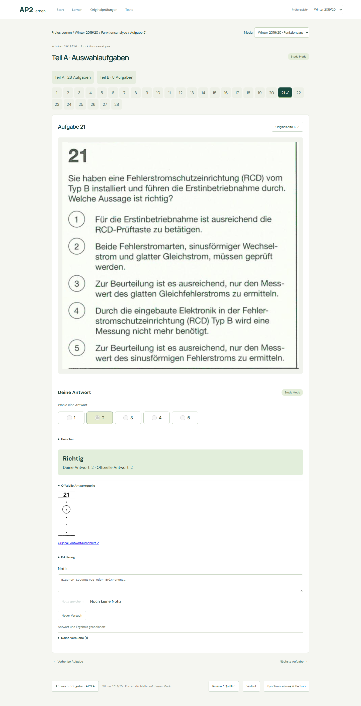
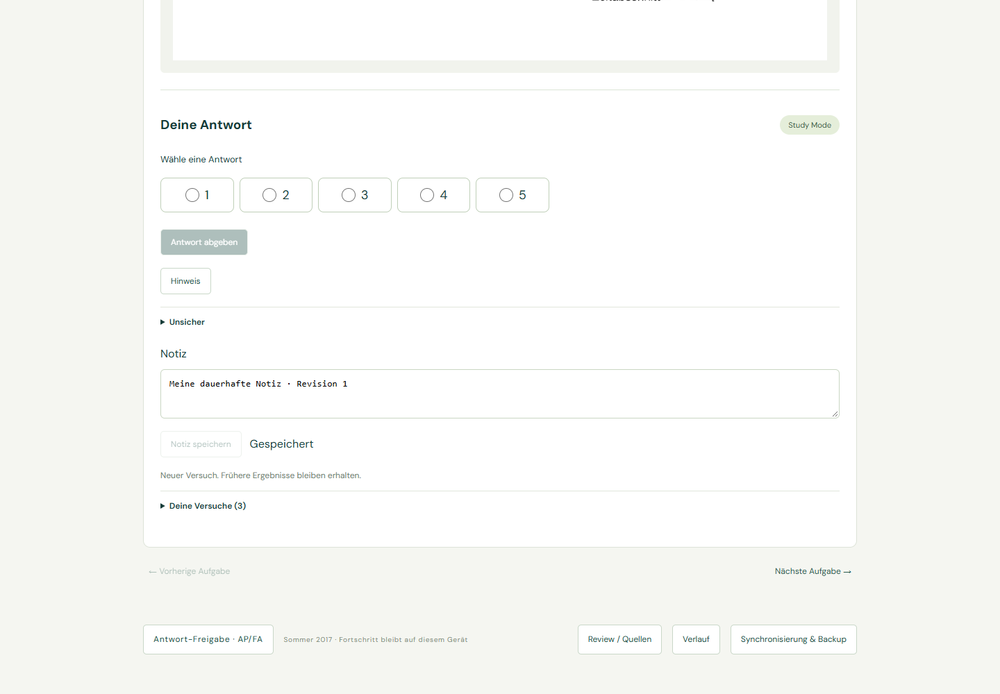
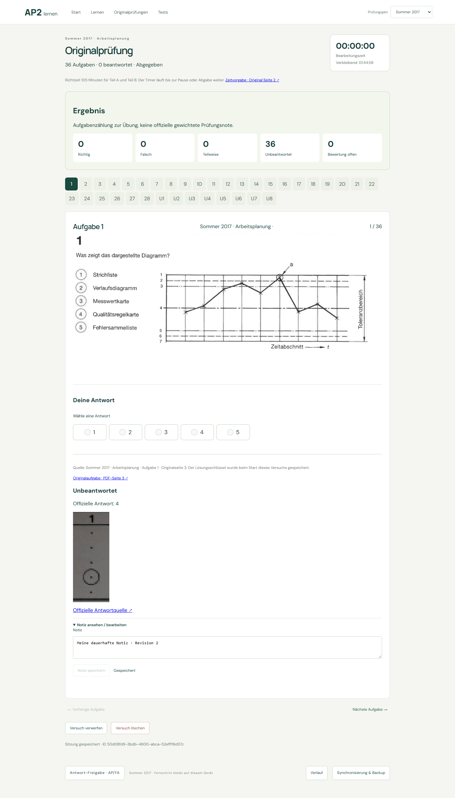

FA Q21 · vom Nutzer bestätigte Antwort 2
confirmed · locked · manual_source_review. Die ursprünglichen Maschinenmessungen und der Originalausschnitt bleiben erhalten.


Notizen bleiben bei neuen Versuchen erhalten. Winter 2019/20 Funktionsanalyse: 36 Aufgaben · 28/28 Auswahlantworten · 8/8 offene Lösungen.
FA Q21 ausprobieren · FA U1 · Start
Antwortauswahl zurückgesetzt, gespeicherte Notiz unverändert. Isolierte Testdaten, keine persönlichen Nutzerdaten.

Während der Bearbeitung verborgen; nach Abgabe editierbar. Verwerfen und Löschen der Prüfung löschen keine Frage-Notiz.

confirmed · locked · manual_source_review. Die ursprünglichen Maschinenmessungen und der Originalausschnitt bleiben erhalten.

112 Frontendtests · 104 Python-Tests. Firebase bleibt nicht konfiguriert; keine echte Cloud-Abnahme. Keine neuen Prüfungsjahre verarbeitet.